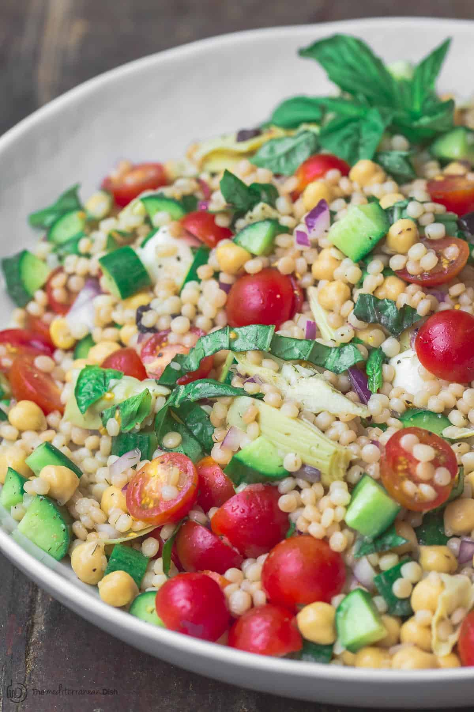

Home
Couscous Salad

Description
This easy to make Couscous Sald packs a lot of flavor and is easy to make. Enjoy a healthy and flavorful meal that makes enough to enjoy for multiple days and you never get tired of.
Ingredient
- Pearl Couscous
- Protein of Choice
- Two Zucchinis
- Cherry Tomatoes
- Red, Orange, and Yellow Bell Pepper
- One Red Onion
- One Lemon
- Olive Oil
- Apple Cider Vinaigrette
Steps
- First chop the Zucchinis, Tomatoes, Onion, and Bell Peppers into a bowl
- Then, pour two tablespoons of olive oil in the bowl and mix them well. Season with love
- Place the veggies on a baking tray on top of parchment paper
- Preheat oven to 425 degrees Farenheit
- Let veggies roast for 30 minutes and move them around halfway through
- While veggies roast, cook Pearl Couscous following instructions in label
- Cook protein of choice
- When veggies are done, toss back into the bowl, squeeze a full lemon into the bowl, add two table spoons of Apple Cider Vinaigrette and mix them all up
- When all other components are cooked and ready, plate and enjoy